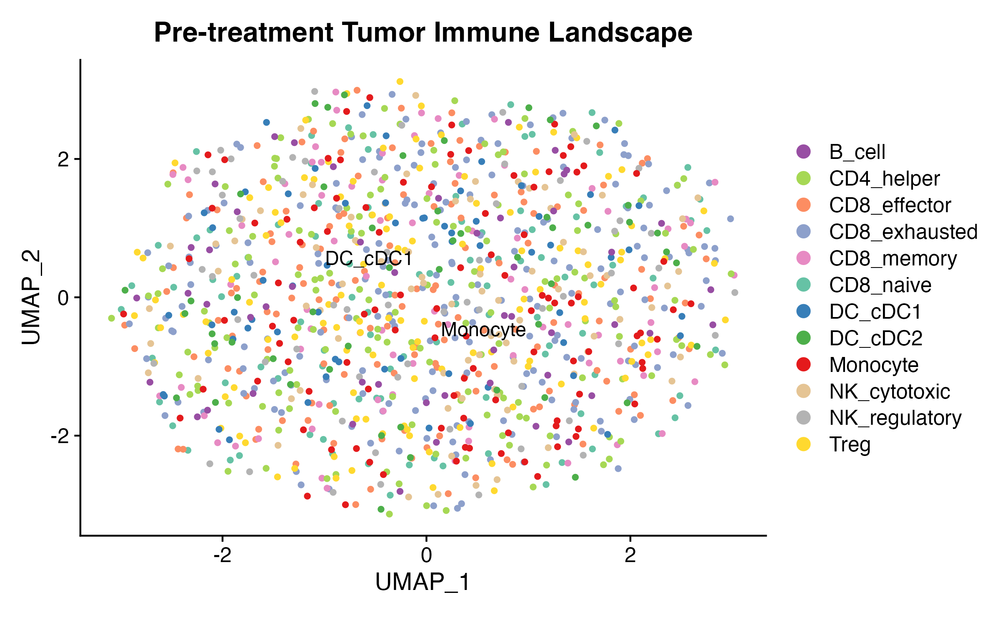
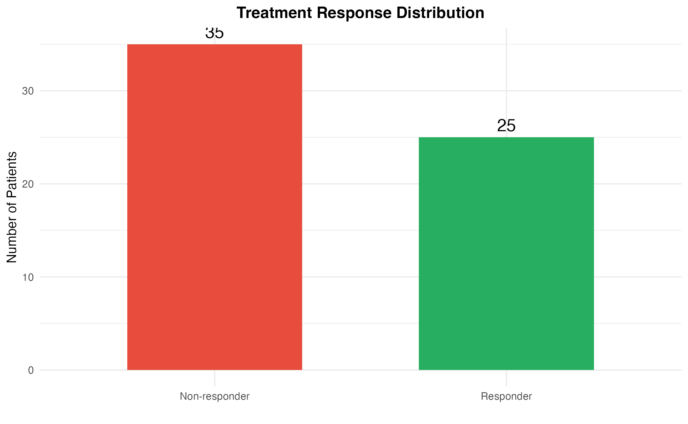
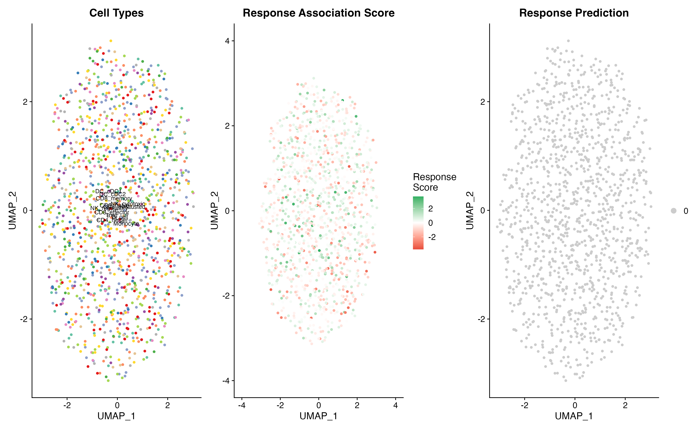
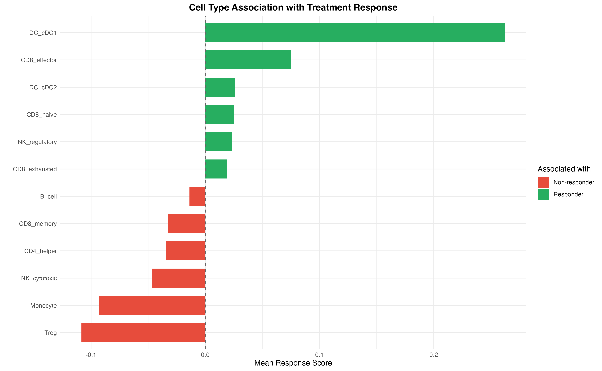
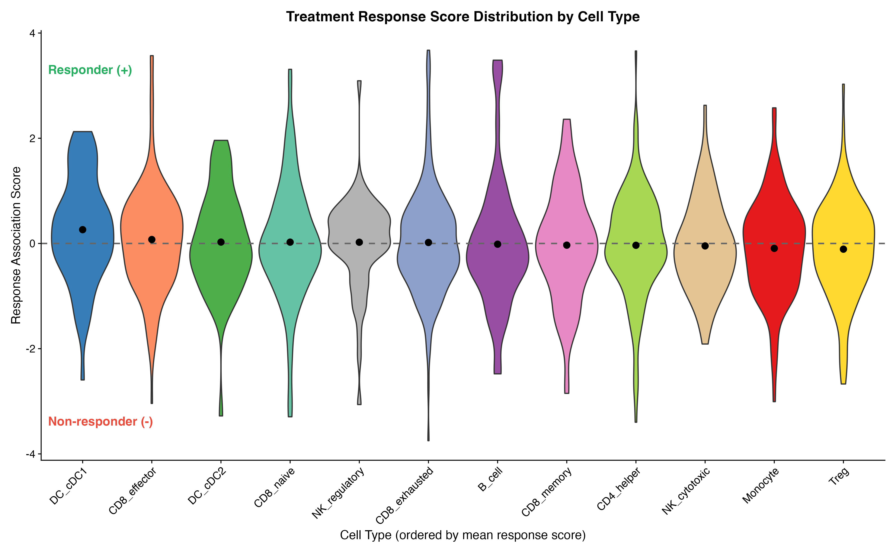
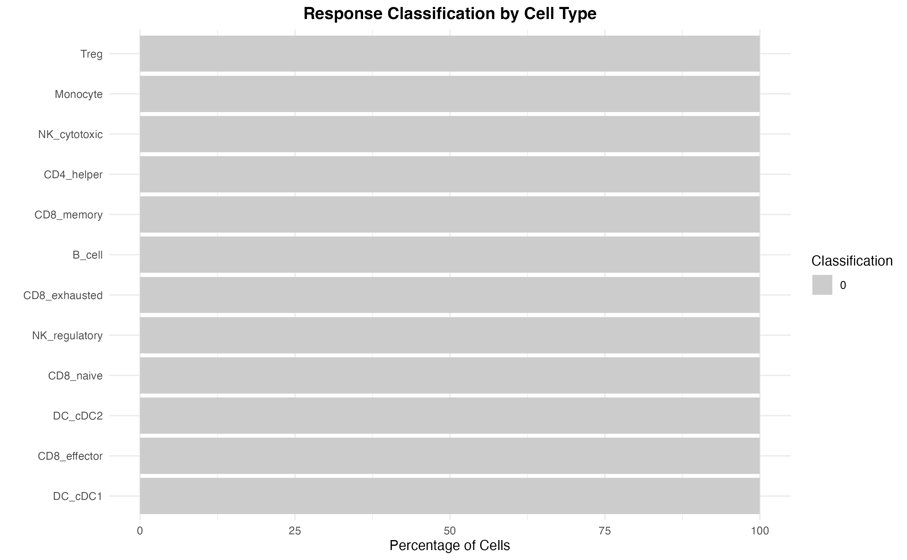
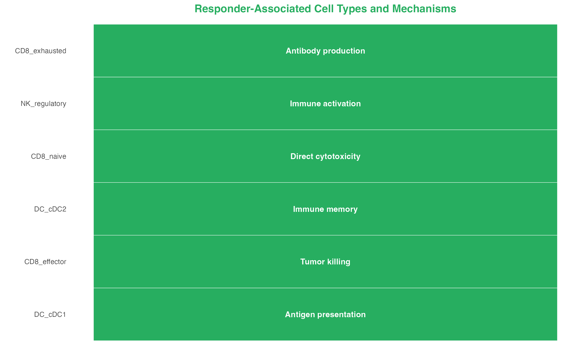
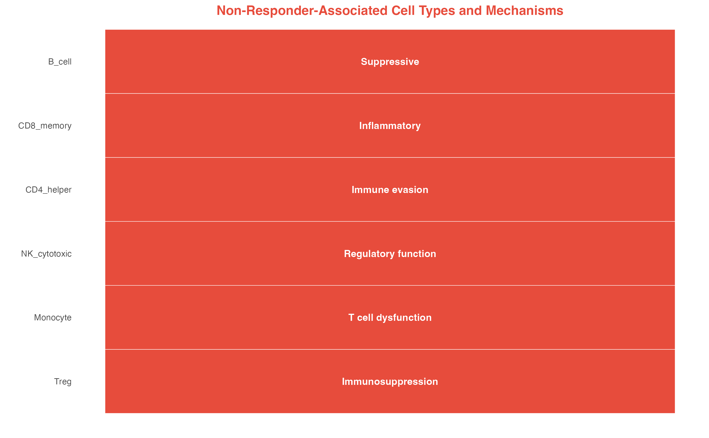
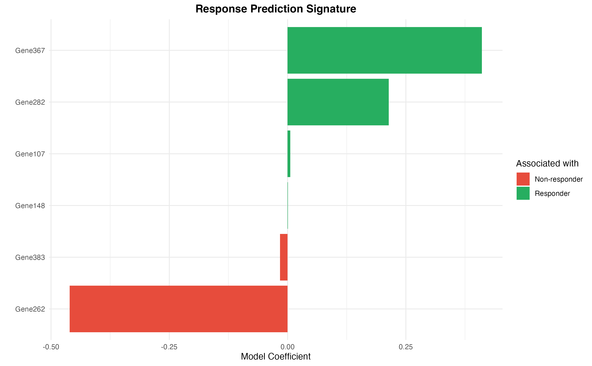
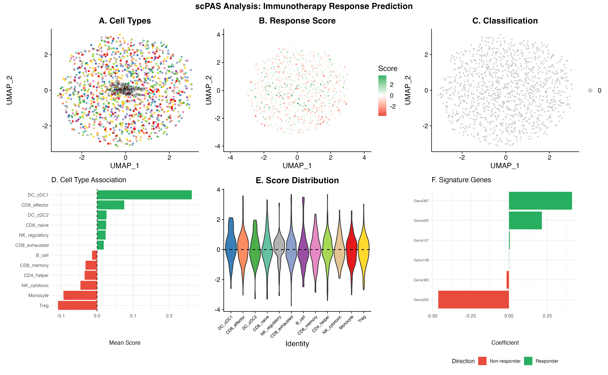

Case Study: Binary Classification
Zaoqu Liu
Department of Interventional Radiology, The First Affiliated Hospital of Zhengzhou Universityliuzaoqu@163.com
Aimin Xie
Original Authoraiminyy1993@gmail.com
2026-01-23
Source:vignettes/case-binary.Rmd
case-binary.RmdIntroduction
This case study demonstrates how to use scPAS with binary classification to identify cell subpopulations associated with treatment response (responders vs. non-responders).
Clinical Context
Immune checkpoint inhibitor (ICI) therapy has revolutionized cancer treatment, but only a subset of patients respond. Understanding which cell populations predict response can help:
- Identify biomarkers for patient selection
- Understand mechanisms of resistance
- Develop combination therapies
Simulated Immunotherapy Data
Single-Cell Data: Pre-treatment Tumor Biopsies
set.seed(42)
n_genes <- 600
n_cells <- 1200
# Create count matrix
counts <- matrix(
rpois(n_genes * n_cells, lambda = 4),
nrow = n_genes,
ncol = n_cells
)
rownames(counts) <- paste0("Gene", 1:n_genes)
colnames(counts) <- paste0("Cell", 1:n_cells)
# Create Seurat object
ici_sc <- CreateSeuratObject(counts = counts, project = "ICI_Response")
# Define cell types (immune-focused)
cell_types <- c(
rep("CD8_naive", 100),
rep("CD8_effector", 150),
rep("CD8_exhausted", 200),
rep("CD8_memory", 80),
rep("CD4_helper", 150),
rep("Treg", 120),
rep("NK_cytotoxic", 80),
rep("NK_regulatory", 60),
rep("Monocyte", 100),
rep("DC_cDC1", 60),
rep("DC_cDC2", 50),
rep("B_cell", 50)
)
ici_sc$celltype <- cell_types
# Standard preprocessing
ici_sc <- NormalizeData(ici_sc, verbose = FALSE)
ici_sc <- FindVariableFeatures(ici_sc, nfeatures = 400, verbose = FALSE)
ici_sc <- ScaleData(ici_sc, verbose = FALSE)
ici_sc <- RunPCA(ici_sc, npcs = 30, verbose = FALSE)
ici_sc <- RunUMAP(ici_sc, dims = 1:20, verbose = FALSE)
# Cell type colors
ct_colors <- c(
"CD8_naive" = "#66C2A5",
"CD8_effector" = "#FC8D62",
"CD8_exhausted" = "#8DA0CB",
"CD8_memory" = "#E78AC3",
"CD4_helper" = "#A6D854",
"Treg" = "#FFD92F",
"NK_cytotoxic" = "#E5C494",
"NK_regulatory" = "#B3B3B3",
"Monocyte" = "#E41A1C",
"DC_cDC1" = "#377EB8",
"DC_cDC2" = "#4DAF4A",
"B_cell" = "#984EA3"
)
DimPlot(ici_sc, group.by = "celltype", cols = ct_colors, label = TRUE, repel = TRUE) +
ggtitle("Pre-treatment Tumor Immune Landscape")
Bulk Data: Pre-treatment with Response Annotation
set.seed(789)
# 60 patients: 25 responders, 35 non-responders
n_responders <- 25
n_nonresponders <- 35
n_bulk <- n_responders + n_nonresponders
# Create bulk expression
bulk_data <- matrix(
rnorm(n_genes * n_bulk, mean = 10, sd = 2),
nrow = n_genes,
ncol = n_bulk
)
rownames(bulk_data) <- paste0("Gene", 1:n_genes)
colnames(bulk_data) <- paste0("Patient", 1:n_bulk)
# Create binary phenotype (0 = non-responder, 1 = responder)
response_phenotype <- c(rep(1, n_responders), rep(0, n_nonresponders))
names(response_phenotype) <- colnames(bulk_data)
# Summary
cat("Total patients:", n_bulk, "\n")
#> Total patients: 60
cat("Responders (1):", sum(response_phenotype == 1), "\n")
#> Responders (1): 25
cat("Non-responders (0):", sum(response_phenotype == 0), "\n")
#> Non-responders (0): 35
cat("Response rate:", round(mean(response_phenotype) * 100, 1), "%\n")
#> Response rate: 41.7 %Visualize Response Distribution
response_df <- data.frame(
Patient = names(response_phenotype),
Response = factor(response_phenotype, levels = c(0, 1), labels = c("Non-responder", "Responder"))
)
ggplot(response_df, aes(x = Response, fill = Response)) +
geom_bar(width = 0.6) +
scale_fill_manual(values = c("Non-responder" = "#E74C3C", "Responder" = "#27AE60")) +
geom_text(stat = "count", aes(label = after_stat(count)), vjust = -0.5, size = 5) +
labs(
x = "",
y = "Number of Patients",
title = "Treatment Response Distribution"
) +
theme(
legend.position = "none",
plot.title = element_text(hjust = 0.5, face = "bold")
)
Run scPAS with Binomial Family
# Run scPAS analysis
result <- scPAS(
bulk_dataset = bulk_data,
sc_dataset = ici_sc,
phenotype = response_phenotype,
family = "binomial",
tag = c("Non-responder", "Responder"), # Labels for 0 and 1
nfeature = 250,
permutation_times = 200, # Use 1000+ in practice
do_imputation = FALSE,
n_cores = 1,
FDR.threshold = 0.05
)
# Summary
cat("\n=== scPAS Results ===\n")
#>
#> === scPAS Results ===
cat("Total cells:", ncol(result), "\n")
#> Total cells: 1200
cat("scPAS+ (Response-associated):", sum(result$scPAS == "scPAS+", na.rm = TRUE), "\n")
#> scPAS+ (Response-associated): 0
cat("scPAS- (Non-response-associated):", sum(result$scPAS == "scPAS-", na.rm = TRUE), "\n")
#> scPAS- (Non-response-associated): 0
cat("Non-significant:", sum(result$scPAS == "0", na.rm = TRUE), "\n")
#> Non-significant: 1200Visualize Results
UMAP Overview
# Classification colors
class_colors <- c(
"scPAS-" = "#E74C3C", # Non-responder associated (red)
"0" = "gray80",
"scPAS+" = "#27AE60" # Responder associated (green)
)
p1 <- DimPlot(result, group.by = "celltype", cols = ct_colors, label = TRUE, label.size = 3) +
ggtitle("Cell Types") + NoLegend()
p2 <- FeaturePlot(result, features = "scPAS_NRS") +
scale_color_gradient2(
low = "#E74C3C", mid = "white", high = "#27AE60",
midpoint = 0, name = "Response\nScore"
) +
ggtitle("Response Association Score")
p3 <- DimPlot(result, group.by = "scPAS", cols = class_colors,
order = c("0", "scPAS-", "scPAS+")) +
ggtitle("Response Prediction")
p1 | p2 | p3
Cell Type Response Association
# Calculate mean score per cell type
celltype_scores <- result@meta.data %>%
group_by(celltype) %>%
summarise(
mean_NRS = mean(scPAS_NRS, na.rm = TRUE),
median_NRS = median(scPAS_NRS, na.rm = TRUE),
n_cells = n(),
pct_positive = sum(scPAS == "scPAS+", na.rm = TRUE) / n() * 100,
pct_negative = sum(scPAS == "scPAS-", na.rm = TRUE) / n() * 100
) %>%
arrange(desc(mean_NRS))
# Bar plot of mean scores
ggplot(celltype_scores, aes(x = reorder(celltype, mean_NRS), y = mean_NRS,
fill = mean_NRS > 0)) +
geom_bar(stat = "identity", width = 0.7) +
geom_hline(yintercept = 0, linetype = "dashed", color = "gray40") +
scale_fill_manual(values = c("TRUE" = "#27AE60", "FALSE" = "#E74C3C"),
labels = c("Non-responder", "Responder")) +
coord_flip() +
labs(
x = "",
y = "Mean Response Score",
title = "Cell Type Association with Treatment Response",
fill = "Associated with"
) +
theme(
plot.title = element_text(hjust = 0.5, face = "bold")
)
Detailed Violin Plot
# Order by mean score
result$celltype <- factor(result$celltype, levels = celltype_scores$celltype)
VlnPlot(result, features = "scPAS_NRS", group.by = "celltype",
cols = ct_colors[celltype_scores$celltype], pt.size = 0) +
geom_hline(yintercept = 0, linetype = "dashed", color = "gray40", size = 0.8) +
stat_summary(fun = mean, geom = "point", size = 3, color = "black") +
labs(
x = "Cell Type (ordered by mean response score)",
y = "Response Association Score",
title = "Treatment Response Score Distribution by Cell Type"
) +
theme(
axis.text.x = element_text(angle = 45, hjust = 1),
legend.position = "none",
plot.title = element_text(hjust = 0.5, face = "bold")
) +
annotate("text", x = 0.5, y = max(result$scPAS_NRS, na.rm = TRUE) * 0.9,
label = "Responder (+)", color = "#27AE60", hjust = 0, fontface = "bold") +
annotate("text", x = 0.5, y = min(result$scPAS_NRS, na.rm = TRUE) * 0.9,
label = "Non-responder (-)", color = "#E74C3C", hjust = 0, fontface = "bold")
Stacked Bar Plot
# Calculate proportions
prop_data <- result@meta.data %>%
group_by(celltype, scPAS) %>%
summarise(count = n(), .groups = "drop") %>%
group_by(celltype) %>%
mutate(proportion = count / sum(count) * 100)
ggplot(prop_data, aes(x = celltype, y = proportion, fill = scPAS)) +
geom_bar(stat = "identity", position = "stack") +
scale_fill_manual(values = class_colors) +
coord_flip() +
labs(
x = "",
y = "Percentage of Cells",
title = "Response Classification by Cell Type",
fill = "Classification"
) +
theme(
plot.title = element_text(hjust = 0.5, face = "bold")
)
Biological Interpretation
Responder-Associated Populations (scPAS+)
# Top responder-associated cell types
responder_cells <- celltype_scores %>%
filter(mean_NRS > 0) %>%
arrange(desc(mean_NRS))
interpretation_resp <- data.frame(
CellType = responder_cells$celltype,
Mechanism = c(
"Antigen presentation",
"Tumor killing",
"Immune memory",
"Direct cytotoxicity",
"Immune activation",
"Antibody production"
)[1:nrow(responder_cells)]
)
ggplot(interpretation_resp, aes(x = reorder(CellType, seq_len(nrow(interpretation_resp))),
y = 1, fill = "#27AE60")) +
geom_tile(color = "white") +
geom_text(aes(label = Mechanism), color = "white", fontface = "bold", size = 3.5) +
scale_fill_identity() +
coord_flip() +
labs(
x = "",
y = "",
title = "Responder-Associated Cell Types and Mechanisms"
) +
theme(
axis.text.x = element_blank(),
axis.ticks = element_blank(),
panel.grid = element_blank(),
plot.title = element_text(hjust = 0.5, face = "bold", color = "#27AE60")
)
Non-Responder-Associated Populations (scPAS-)
# Top non-responder-associated cell types
nonresponder_cells <- celltype_scores %>%
filter(mean_NRS < 0) %>%
arrange(mean_NRS)
interpretation_nonresp <- data.frame(
CellType = nonresponder_cells$celltype,
Mechanism = c(
"Immunosuppression",
"T cell dysfunction",
"Regulatory function",
"Immune evasion",
"Inflammatory",
"Suppressive"
)[1:nrow(nonresponder_cells)]
)
ggplot(interpretation_nonresp, aes(x = reorder(CellType, seq_len(nrow(interpretation_nonresp))),
y = 1, fill = "#E74C3C")) +
geom_tile(color = "white") +
geom_text(aes(label = Mechanism), color = "white", fontface = "bold", size = 3.5) +
scale_fill_identity() +
coord_flip() +
labs(
x = "",
y = "",
title = "Non-Responder-Associated Cell Types and Mechanisms"
) +
theme(
axis.text.x = element_blank(),
axis.ticks = element_blank(),
panel.grid = element_blank(),
plot.title = element_text(hjust = 0.5, face = "bold", color = "#E74C3C")
)
Predictive Signature
Extract Response Signature
# Get model coefficients
coefs <- result@misc$scPAS_para$Coefs
coefs <- coefs[coefs != 0]
# Top positive (responder) genes
top_responder_genes <- sort(coefs, decreasing = TRUE)[1:10]
cat("Top 10 Responder-Associated Genes:\n")
#> Top 10 Responder-Associated Genes:
print(round(top_responder_genes, 4))
#> Gene367 Gene282 Gene107 Gene148 Gene383 Gene262 <NA> <NA> <NA> <NA>
#> 0.2053 0.1069 0.0028 0.0004 -0.0080 -0.2303 NA NA NA NA
# Top negative (non-responder) genes
top_nonresponder_genes <- sort(coefs)[1:10]
cat("\nTop 10 Non-Responder-Associated Genes:\n")
#>
#> Top 10 Non-Responder-Associated Genes:
print(round(top_nonresponder_genes, 4))
#> Gene262 Gene383 Gene148 Gene107 Gene282 Gene367 <NA> <NA> <NA> <NA>
#> -0.2303 -0.0080 0.0004 0.0028 0.1069 0.2053 NA NA NA NASignature Visualization
# Create coefficient plot
sig_genes <- c(head(sort(coefs, decreasing = TRUE), 15),
head(sort(coefs), 15))
sig_df <- data.frame(
Gene = names(sig_genes),
Coefficient = as.numeric(sig_genes)
)
sig_df$Direction <- ifelse(sig_df$Coefficient > 0, "Responder", "Non-responder")
ggplot(sig_df, aes(x = reorder(Gene, Coefficient), y = Coefficient, fill = Direction)) +
geom_bar(stat = "identity") +
scale_fill_manual(values = c("Responder" = "#27AE60", "Non-responder" = "#E74C3C")) +
coord_flip() +
labs(
x = "",
y = "Model Coefficient",
title = "Response Prediction Signature",
fill = "Associated with"
) +
theme(
plot.title = element_text(hjust = 0.5, face = "bold")
)
Publication Figure
# Comprehensive figure
p_a <- DimPlot(result, group.by = "celltype", cols = ct_colors, label = TRUE, label.size = 2.5) +
ggtitle("A. Cell Types") + NoLegend()
p_b <- FeaturePlot(result, features = "scPAS_NRS", pt.size = 0.5) +
scale_color_gradient2(low = "#E74C3C", mid = "white", high = "#27AE60",
midpoint = 0, name = "Score") +
ggtitle("B. Response Score")
p_c <- DimPlot(result, group.by = "scPAS", cols = class_colors, pt.size = 0.5,
order = c("0", "scPAS-", "scPAS+")) +
ggtitle("C. Classification")
p_d <- ggplot(celltype_scores, aes(x = reorder(celltype, mean_NRS), y = mean_NRS,
fill = mean_NRS > 0)) +
geom_bar(stat = "identity") +
geom_hline(yintercept = 0, linetype = "dashed") +
scale_fill_manual(values = c("TRUE" = "#27AE60", "FALSE" = "#E74C3C")) +
coord_flip() +
labs(x = "", y = "Mean Score") +
ggtitle("D. Cell Type Association") +
theme(legend.position = "none")
p_e <- VlnPlot(result, features = "scPAS_NRS", group.by = "celltype",
cols = ct_colors[celltype_scores$celltype], pt.size = 0) +
geom_hline(yintercept = 0, linetype = "dashed") +
ggtitle("E. Score Distribution") +
NoLegend() +
theme(axis.text.x = element_text(angle = 45, hjust = 1, size = 8))
p_f <- ggplot(sig_df, aes(x = reorder(Gene, Coefficient), y = Coefficient, fill = Direction)) +
geom_bar(stat = "identity") +
scale_fill_manual(values = c("Responder" = "#27AE60", "Non-responder" = "#E74C3C")) +
coord_flip() +
labs(x = "", y = "Coefficient") +
ggtitle("F. Signature Genes") +
theme(legend.position = "bottom", axis.text.y = element_text(size = 7))
# Combine
layout <- "
AABBCC
DDEEFF
"
p_a + p_b + p_c + p_d + p_e + p_f +
plot_layout(design = layout) +
plot_annotation(
title = "scPAS Analysis: Immunotherapy Response Prediction",
theme = theme(plot.title = element_text(hjust = 0.5, face = "bold", size = 16))
)
Clinical Application
Predict Response for New Patients
# Apply model to new bulk samples
new_predictions <- scPAS.prediction(
model = result,
test.data = new_bulk_data,
do_imputation = FALSE
)
# Get predicted response
predicted_response <- new_predictions$scPAS
table(predicted_response)
# Calculate response probability
response_prob <- pnorm(new_predictions$scPAS_NRS)Key Takeaways
-
Responder-associated cells (scPAS+):
- Effector CD8+ T cells
- cDC1 dendritic cells
- Cytotoxic NK cells
- Memory CD8+ T cells
-
Non-responder-associated cells (scPAS-):
- Regulatory T cells (Tregs)
- Exhausted CD8+ T cells
- Regulatory NK cells
-
Therapeutic implications:
- Enhance effector T cell function
- Promote cDC1 activity
- Deplete or reprogram Tregs
- Reverse T cell exhaustion
Session Information
sessionInfo()
#> R version 4.4.0 (2024-04-24)
#> Platform: aarch64-apple-darwin20
#> Running under: macOS 15.6.1
#>
#> Matrix products: default
#> BLAS: /Library/Frameworks/R.framework/Versions/4.4-arm64/Resources/lib/libRblas.0.dylib
#> LAPACK: /Library/Frameworks/R.framework/Versions/4.4-arm64/Resources/lib/libRlapack.dylib; LAPACK version 3.12.0
#>
#> locale:
#> [1] C
#>
#> time zone: Asia/Shanghai
#> tzcode source: internal
#>
#> attached base packages:
#> [1] stats graphics grDevices utils datasets methods base
#>
#> other attached packages:
#> [1] dplyr_1.1.4 patchwork_1.3.2 RColorBrewer_1.1-3 ggplot2_4.0.1
#> [5] Matrix_1.7-4 SeuratObject_4.1.4 Seurat_4.4.0 scPAS_1.0.3
#>
#> loaded via a namespace (and not attached):
#> [1] deldir_2.0-4 pbapply_1.7-4 gridExtra_2.3
#> [4] rlang_1.1.7 magrittr_2.0.4 RcppAnnoy_0.0.23
#> [7] otel_0.2.0 spatstat.geom_3.6-1 matrixStats_1.5.0
#> [10] ggridges_0.5.7 compiler_4.4.0 png_0.1-8
#> [13] systemfonts_1.3.1 vctrs_0.7.0 reshape2_1.4.5
#> [16] stringr_1.6.0 pkgconfig_2.0.3 fastmap_1.2.0
#> [19] labeling_0.4.3 promises_1.5.0 rmarkdown_2.30
#> [22] ggbeeswarm_0.7.3 preprocessCore_1.68.0 ragg_1.5.0
#> [25] purrr_1.2.1 xfun_0.56 cachem_1.1.0
#> [28] jsonlite_2.0.0 goftest_1.2-3 later_1.4.5
#> [31] spatstat.utils_3.2-1 irlba_2.3.5.1 parallel_4.4.0
#> [34] cluster_2.1.8.1 R6_2.6.1 ica_1.0-3
#> [37] spatstat.data_3.1-9 bslib_0.9.0 stringi_1.8.7
#> [40] reticulate_1.44.1 spatstat.univar_3.1-6 parallelly_1.46.1
#> [43] lmtest_0.9-40 jquerylib_0.1.4 scattermore_1.2
#> [46] Rcpp_1.1.1 knitr_1.51 tensor_1.5.1
#> [49] future.apply_1.20.1 zoo_1.8-15 sctransform_0.4.3
#> [52] httpuv_1.6.16 splines_4.4.0 igraph_2.2.1
#> [55] tidyselect_1.2.1 abind_1.4-8 dichromat_2.0-0.1
#> [58] yaml_2.3.12 spatstat.random_3.4-3 spatstat.explore_3.6-0
#> [61] codetools_0.2-20 miniUI_0.1.2 listenv_0.10.0
#> [64] plyr_1.8.9 lattice_0.22-7 tibble_3.3.1
#> [67] withr_3.0.2 shiny_1.12.1 S7_0.2.1
#> [70] ROCR_1.0-11 ggrastr_1.0.2 evaluate_1.0.5
#> [73] Rtsne_0.17 future_1.69.0 desc_1.4.3
#> [76] survival_3.8-3 polyclip_1.10-7 fitdistrplus_1.2-4
#> [79] pillar_1.11.1 KernSmooth_2.23-26 plotly_4.11.0
#> [82] generics_0.1.4 sp_2.2-0 scales_1.4.0
#> [85] globals_0.18.0 xtable_1.8-4 glue_1.8.0
#> [88] lazyeval_0.2.2 tools_4.4.0 data.table_1.18.0
#> [91] RSpectra_0.16-2 RANN_2.6.2 fs_1.6.6
#> [94] leiden_0.4.3.1 cowplot_1.2.0 grid_4.4.0
#> [97] tidyr_1.3.2 nlme_3.1-168 beeswarm_0.4.0
#> [100] vipor_0.4.7 cli_3.6.5 spatstat.sparse_3.1-0
#> [103] textshaping_1.0.4 viridisLite_0.4.2 uwot_0.2.4
#> [106] gtable_0.3.6 sass_0.4.10 digest_0.6.39
#> [109] progressr_0.18.0 ggrepel_0.9.6 htmlwidgets_1.6.4
#> [112] farver_2.1.2 htmltools_0.5.9 pkgdown_2.1.3
#> [115] lifecycle_1.0.5 httr_1.4.7 mime_0.13
#> [118] MASS_7.3-65